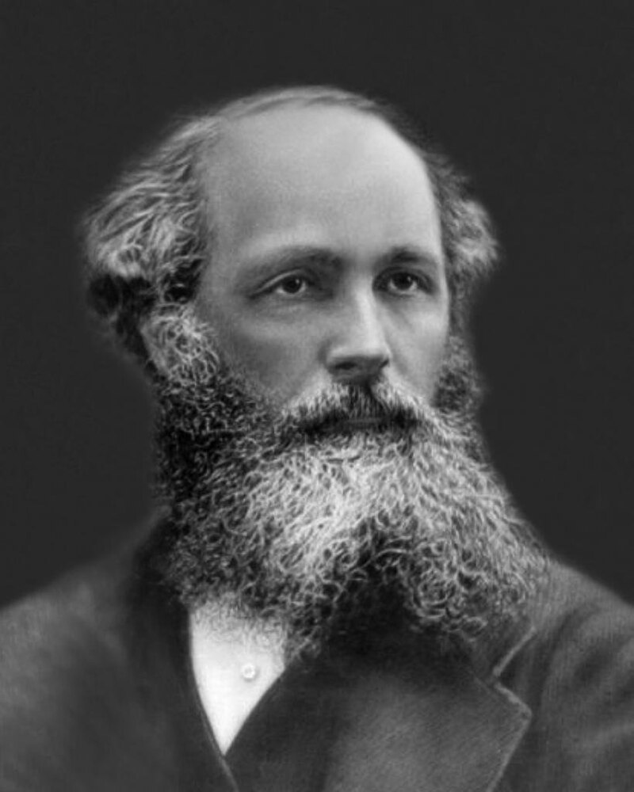
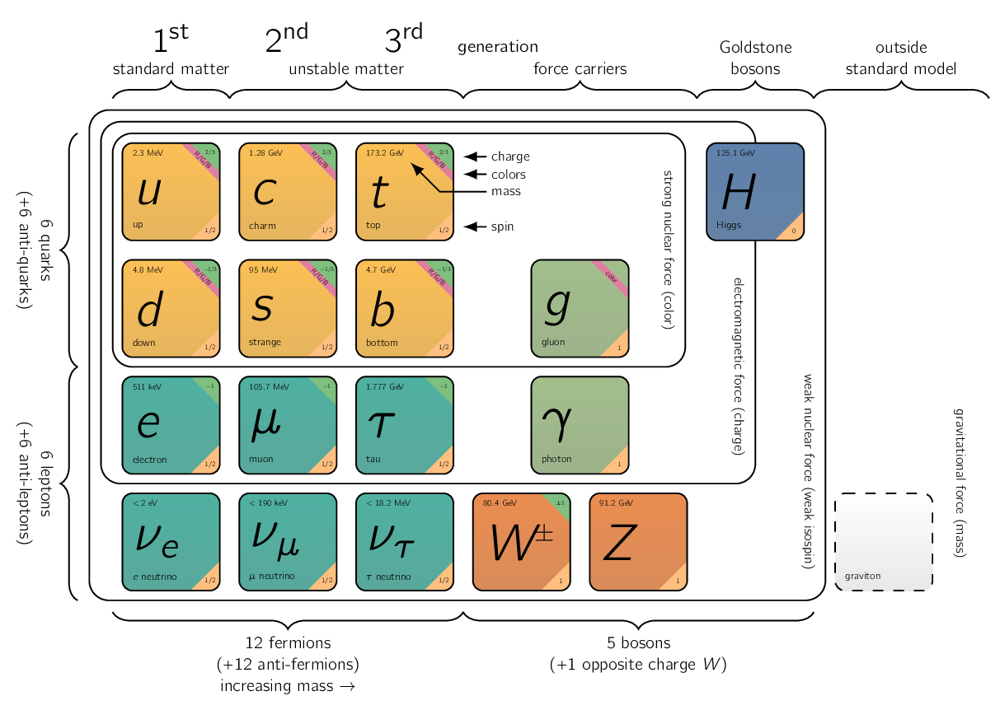

Newtonian mechanics is generally sufficient enough for most everyday applications ranging from calculating the motion an object falling from a building to predicting the motion of planets. When objects start to move at high speeds, [1] as in speeds comparable to the speed of light. however, the Newtonian model fails to predict accurately and was replaced by special relativity, which was introduced by Einstein in 1905 [†-1] Einstein, A. On the electrodynamics of moving bodies (1905). For objects which are extremely small, sizes comparable to that of atoms, then the theory of relativity fails for different reasons, and is superseded by quantum mechanics. [2] Developed by Bohr, Schrodinger, Heisenberg, and many others, in the 1920’s, mostly.
Finally, for objects which are both very fast and very small, [3] As is common in modern particle physics. a mechanics which combines both relativity and quantum principles is needed:
Luckily for us, in M.Sc Electrodynamics, we will NOT look at these models in detail but look at a specific subset of it called electrodynamics which is generally in the domain of classical mechanics. [4] which can be extended to other domains if needed.
Interestingly, electromagnetism was one of the primary catalyst for developing general relativity.
Historically, the Maxwell equations were discovered before the theory of special relativity. It was thought light waves we derived above must be oscillations of some substance which fills all of space. This was dubbed the aether. [5] the postulated medium for the propagation of light [†-2] Brewer, E. C. A guide to the scientific knowledge of things familiar (CS Francis & Company, 1852). It was originally used to explain the ability of the apparently wave-based light to propagate through empty space, something waves should NOT be able to do. The assumption of a spatial plenum of luminiferous aether, rather than a spatial vacuum, provided the theoretical medium that was required by wave theories of light. The idea was that Maxwell’s equations only hold in the frame in which the aether is at rest; light should then travel at speed relative to the aether.
We now know that the concept of the aether is unnecessary. Instead, Maxwell’s equations hold in all inertial frames and are the first equations of physics which are consistent with the laws of special relativity. Ultimately, it was by studying the Maxwell equations that Lorentz was able to determine the form of the Lorentz transformations which subsequently laid the foundation for Einstein’s vision of space and time [†-3] Tong, D. Ch 5. Electromagnetism and Relativity 2024.
Classical Mechanics tells us how behavior is when subjected to a given force. There are four (4) basic forces known to physics. Listing them in the order of decreasing strength:
- Strong
-
Holds protons and neutrons together in the atomic nucleus, have extremely short range, so we do not “feel” them, in spite of the fact that they are a hundred times more powerful than electrical forces.
- Weak
-
Accounts for certain kinds of radioactive decay, are also of short range, and they are far weaker than electromagnetic forces.
- Gravitational
-
it is very weak [6] compared to all of the others that it is only in scale of huge mass concentrations, for example the earth and the sun, that we ever notice it at all.
- Electromagnetic
-
It is the interaction which occurs between particles with electric charge through electromagnetic fields.
For reference, the electrical repulsion between two (2) electrons is times as large as their gravitational attraction.
| Traits | Strong Force | Electromagnetism | Weak Force | Gravity |
|
Affected Particles | quarks1 and gluons2 | electrically charged | quarks and leptons3 | all particles with mass |
|
Force Carrying Particle | gluon () | photon4 () | W and Z
bosons | graviton (unobserved) |
| Acting Range | short ( )5 | short | ||
| Strength | 1 | 6 |
1 Elementary particle responsible for making protons and neutron.
2 Elementary particle acting as exchange particle for the strong force between quarks.
3 Elementary particle affected by the weak force but not by the strong force.
4 Elementary particle that is a quantum of the electromagnetic field, such as light and radio waves.
5 1 femtometre ( = ). i.e., the gold nucleus radius is approx. .
6 Known as the fine structure constant.
Not only are electromagnetic forces overwhelmingly dominant in everyday life, they are also, the only ones which are completely understood.
There is, of course, a classical theory of gravity and a relativistic one, but no entirely satisfactory quantum mechanical theory of gravity has been constructed. At the present time there is a very successful theory for the weak interactions, and a strikingly attractive candidate, called chromodynamics, for the strong interactions.
All these theories draw their inspiration from electrodynamics. None can claim conclusive experimental verification at this stage. So electrodynamics, a complete and successful theory, has become a pedestal for physicists:
The laws of classical electrodynamics were discovered in bits and pieces by Franklin, Coulomb, Ampere,
Faraday, and others, but the person who completed the job, and packaged it all in the compact
and consistent form it has today, was James Clerk Maxwell. [7] 
In the beginning, electricity and magnetism were entirely separate subjects. The one dealt with glass rods and cat’s fur, batteries, currents, electrolysis, and lightning, whereas the other with bar magnets, iron filings, compass needles, and the North Pole. However, in 1820 Øersted noticed that an electric current could deflect a magnetic compass needle [†-4] Snelders, H. A. M. Oersted’s discovery of electromagnetism. Romanticism and the Sciences, 228–40 (1990). Soon afterwards, Ampére correctly postulated all magnetic phenomena are due to electric charges in motion. Then, in 1831, Faraday discovered that a moving magnet generates an electric current [†-5] Al-Khalili, J. The birth of the electric machines: a commentary on Faraday (1832)‘Experimental researches in electricity’. Philosophical transactions. Series A, Mathematical, physical, and engineering sciences 373, 20140208 (2015). By the time Maxwell and Lorentz put the finishing touches on the theory, electricity and magnetism were inextricably intertwined.
They could no longer be regarded as separate subjects, but rather as two aspects of a single subject: electromagnetism.
Faraday speculated that light, too, is electrical in nature [†-6] Schatz, P. & McCaffery, A. The faraday effect. Quarterly Reviews, Chemical Society 23, 552–584 (1969). Maxwell’s theory provided justification for this hypothesis, and soon optics, which is the study of lenses, mirrors, prisms, interference, and diffraction, was incorporated into electromagnetism. Hertz, who presented the decisive experimental confirmation for Maxwell’s theory in 1888, said [†-7] Hertz, H. On the relations between light and electricity in Heinrich Rudolf Hertz (1857-1894) 273–288 (Routledge, 2019):
The connection between light and electricity is now established …In every flame, in every luminous particle, we see an electrical process …Thus, the domain of electricity extends over the whole of nature. It even affects ourselves intimately: we perceive that we possess …an electrical organ-the eye.
By 1900, three (3) great branches of physics: electricity, magnetism, and optics had merged into a single unified theory.
It became apparent that visible light represents only a tiny “window” in the vast spectrum of electromagnetic radiation, from radio through microwaves, infrared and ultraviolet …
Einstein worked on a further unification, which would combine gravity and electrodynamics, in much the same way as electricity and magnetism had been combined a century earlier. His unified field theory was not particularly successful, but in recent years the same impulse has spawned a hierarchy of increasingly ambitious unification schemes, beginning in the 1960s with the electroweak theory of Glashow, Weinberg, and Salam, which joins the weak and electromagnetic forces [†-8] Bilenky, S. M. & Hosek, J. Glashow-Weinberg-Salam theory of electroweak interactions and the neutral currents. Physics Reports 90, 73–157 (1982), and culminating in the 1980s with the superstring theory. [8] an attempt to explain all of the particles and fundamental forces of nature in one theory by modeling them as vibrations of tiny supersymmetric strings.

At each step in this hierarchy, the mathematical difficulties mount, and the gap between inspired conjecture and experimental test widens; nevertheless, it is clear the unification of forces initiated by electrodynamics has become a major theme in the progress of physics.
The essential problem the theory of electromagnetism hopes to solve is:
The classical solution takes the form of a field theory:
We say that the space around an electric charge is permeated by electric and magnetic fields. A second charge, in the presence of these fields, experiences a force. The fields, then, transmit the influence from one charge to the other-they “mediate” the interaction.
When a charge undergoes acceleration, a portion of the field detaches itself, in sense, and travels off at the speed of light, carrying with it energy, momentum, and angular momentum. We call this electromagnetic radiation. Its existence invites [9] if not compels us to regard the fields as independent dynamical entities in their own right, every bit as real as atoms or baseballs.
Our interest accordingly shifts from the study of forces between charges to the theory of the fields themselves. But it takes a charge to produce an electromagnetic field, and it takes another charge to detect one, so we had best begin by reviewing the essential properties of electric charge.
- Charge comes in two varieties
-
We call plus and minus, as their effects tend to cancel. [10] If we have +q and q at the same point, electrically it is the same as having no charge there at all. The interesting point here is that plus and minus charges occur in exactly equal amounts, to high precision, in bulk matter, so that their effects are almost completely neutralised.
- Charge is conserved
-
Charge cannot be created or destroyed [†-9] Purcell, E. M. Electricity and magnetism (Cambridge university press, 2013). What there is now has always been. A plus charge can annihilate an equal minus charge, but a plus charge cannot simply disappear by itself, something must pick up that electric charge. So the total charge of the universe is fixed for all time.
This is called global conservation of charge. Charges also cannot disappear and then reappear in some other place, the charge, if moved must follow a continuous path. This is called local conservation of charge.
- Charge is quantised
-
While there is no restrictions in classical electrodynamics which require it to be, electric charge comes only in integer multiples of the basic unit of charge. If we call the charge on the proton +e, then the electron carries charge e. [11] It is never 7.392e, or 1/2e.
Charge conservation does NOT mean that individual positive and negative charges cannot be created or destroyed. Electric charge is carried by subatomic particles such as electrons and protons. Charged particles can be created and destroyed in elementary particle reactions.
In particle physics, charge conservation means, in reactions that create charged particles, equal numbers of positive and negative particles are always created, keeping the net amount of charge unchanged. Similarly, when particles are destroyed, equal numbers of positive and negative charges are destroyed.
This property is supported without exception by all empirical observations so far [†-9] Purcell, E. M. Electricity and magnetism (Cambridge university press, 2013).
Even though the conservation of charge requires that the total quantity of charge in the universe is constant, it leaves open the question of what that quantity is. Most evidence indicates that the net charge in the universe is zero [†-10] Orito, S & Yoshimura, M. Can the universe be charged? Physical review letters 54, 2457 (1985). That is, there are equal quantities of positive and negative charge.
- 1.
- Einstein, A. On the electrodynamics of moving bodies (1905)
- 2.
- Brewer, E. C. A guide to the scientific knowledge of things familiar (CS Francis & Company, 1852)
- 3.
- Tong, D. Ch 5. Electromagnetism and Relativity 2024
- 4.
- Snelders, H. A. M. Oersted’s discovery of electromagnetism. Romanticism and the Sciences, 228–40 (1990)
- 5.
- Al-Khalili, J. The birth of the electric machines: a commentary on Faraday (1832)‘Experimental researches in electricity’. Philosophical transactions. Series A, Mathematical, physical, and engineering sciences 373, 20140208 (2015)
- 6.
- Schatz, P. & McCaffery, A. The faraday effect. Quarterly Reviews, Chemical Society 23, 552–584 (1969)
- 7.
- Hertz, H. On the relations between light and electricity in Heinrich Rudolf Hertz (1857-1894) 273–288 (Routledge, 2019)
- 8.
- Bilenky, S. M. & Hosek, J. Glashow-Weinberg-Salam theory of electroweak interactions and the neutral currents. Physics Reports 90, 73–157 (1982)
- 9.
- Purcell, E. M. Electricity and magnetism (Cambridge university press, 2013)
- 10.
- Orito, S & Yoshimura, M. Can the universe be charged? Physical review letters 54, 2457 (1985)